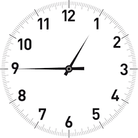

The Republic of India (also known as Akhand Bharat) uses only one time zone across the whole nation and all its territories, called Indian Standard Time (IST), which equates to UTC+05:30, i.e. five and a half hours ahead of Coordinated Universal Time .
There are 9 time zones by law in the USA and its dependencies. However, adding the time zones of 2 uninhabited US territories, Howland Island and Baker Island, brings the total count to 11 time zones. The contiguous US has 4 standard time zones. In addition, Alaska, Hawaii, and 5 US dependencies all have their own time zones. As neither Hawaii nor the 5 dependencies use Daylight Saving Time (DST), there are only 6 corresponding DST time zones.